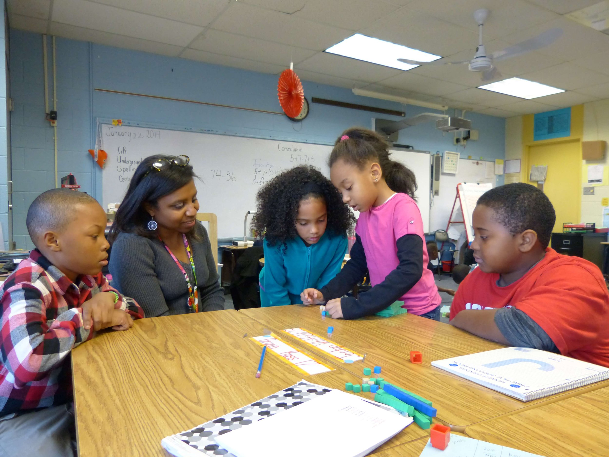
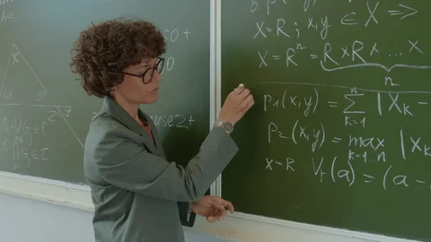
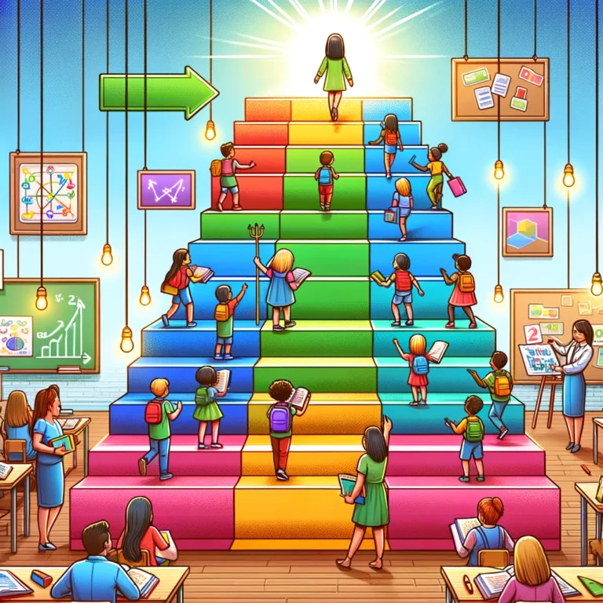

Ideas Esenciales
- La instrucción guiada se basa en una enseñanza estructurada y secuencial.
- El docente proporciona ejemplos, explicaciones claras y andamiaje progresivo.
- Los estudiantes practican con apoyo antes de pasar a la independencia.
- Se enfatiza la retroalimentación inmediata y la corrección de errores.

Tipos de Andamiaje

×
Instrucción Directa
La instrucción directa es una estrategia en la que el docente presenta los contenidos de forma clara y secuencial...
×
Modelamiento
El modelamiento implica que el docente realice una tarea o resuelva un problema frente a los estudiantes...
×
Cues y Prompts
Los "cues" (señales) y "prompts" (estímulos o ayudas) son indicaciones verbales o visuales que el docente ofrece...
×
Preguntas
El uso de preguntas estratégicas permite al docente guiar el pensamiento del estudiante...
Beneficios
- Favorece la comprensión clara de conceptos complejos.
- Reduce la carga cognitiva en el aprendizaje inicial.
- Permite una evaluación continua y ajuste del proceso.
- Útil especialmente para estudiantes con menos experiencia o autonomía.

Retos
- Puede limitar la creatividad o exploración espontánea.
- Requiere una planificación muy detallada por parte del docente.
- Menor protagonismo del estudiante si no se equilibra con fases activas.

Referencias
- Rosenshine, B. (2012). Principles of Instruction. American Educator.
- Vygotsky, L. S. (1978). Mind in Society: The Development of Higher Psychological Processes.
- Sweller, J. (1988). Cognitive load during problem solving: Effects on learning. Cognitive Science.
Planificación de Ejemplo
 Ver planificación en PDF
Ver planificación en PDF